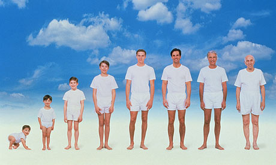
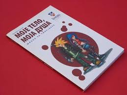
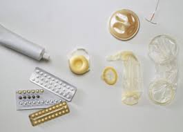

Odrastanje je proces rasta i razvoja organizma. Tokom života, čovjek prolazi kroz nekoliko životnih doba: doba novorođenčeta, doba odojčeta, ranog djetinjstva, djetinjstva, puberteta (rane adolescencije) i kasne adolescencije; nakon toga nastupa zrelo doba. Poslije tridesete godine života, rad organskih sistema postepeno usporava. Brzina slabljenja funkcija tijela određena je genetskom osnovom, ali i uslovima životne sredine. Slabljenje funkcija organskih sistema dovodi do starenja, a na kraju i do smrti.
Od rođenja do starosti
Rađanjem novorođenče započinje život u novoj životnoj sredini. Po dolasku na svijet počinju prvi pokreti disanja, mijenja se način ishrane. Tokom prve nedelje života dijete sve radnje obavlja instiktivno i refleksno. Za razvoj novorođenčeta najpotpunija i najzdravija hrana je majčino mlijeko. Zato se ovo doba, koje traje do kraja prve godine života, označava kao doba odojčeta. U toku ovog perioda skelet brzo okoštava, jačaju mišići, dijete počinje da sjedi, a krajem prve godine života i da hoda i govori.
Drugo doba razvoja obuhvata period ranog djetinjstva, koji traje do polaska djeteta u školu. U ovom periodu razvoja porastu svi mliječni zubi i dijete može jesti istu hranu kao i odrasli. Tokom ranog djetinjstva dolazi do brzog tjelesnog i psihičkog razvoja; dijete nauči da hoda, govori, stiče osnovne životne navike. Polaskom u školu počinje djetinjstvo. Ovaj period karakteriše se sistematskim i organizovanim sticanjem znanja, privikavanjem na društvene obaveze.
Oko desete godine počinje doba puberteta (rana adolescencija), koje traje nekoliko godina. Ovo je period u kome dolazi do tjelesnog i psihičkog sazrijevanja dječaka i djevojčica. U pubertetu se, pod uticajem polnih hormona, počinju jasno uočavati razlike između polova. U ovom periodu mladi mijenjaju odnos prema roditeljima, često im smetaju savjeti odraslih, žele da sami upravljaju svojim životom i da sami donose odlike; traže prijateljstvo među svojim vršnjacima jer se međusobno dobro razumiju. Psihičko odrastanje izaziva česte promjene raspoloženja-preosjetljivost, razdražljivost, nesigurnost, tvrdoglavost, bezvoljnost...U ovom periodu za mlade je veoma važna stabilna porodica, razumijevanje i podrška roditelja. Ako izostane podrška roditelja, mladi često rješenje svojih problema pronalaze u delikventnom ponašanju; postaju agresivni, počinju da puše, konzumiraju alkohol...
Jedna od mnogobrojnih knjiga koje pomažu tinejdžerima da upoznaju svoje tijelo i probleme koje nosi pubertet
Nakon puberteta rast se postepeno završava; taj period se označava kao kasna adolescencija i traje do 20-23 godine života. Osjećanja adolescenata u ovom periodu se stabilizuju, odnosi u porodici su bolji nego u pubertetu, formira se lični svijet vrijednosti. Mladi se često u ovom periodu odlučuju za svoje buduće zanimanje; postaju sposobni za zreo ljubavni odnos.
Nakon perioda adolescencije nastupa zrelo doba, koje traje oko 40 godina. To je period kada postajemo društveno odgovorni ljudi, zreli za formiranje porodice i radno najsposobniji. Stvaranje porodice zahtijeva obezbjeđivanje ekonomskih uslova za rađanje i vaspitavanje djece. Planiranje porodice je važno. Ako ne postoje uslovi za rađanje djeteta, treba koristiti sredstva za zaštitu od neželjene trudnoće, tj. sredstva kontracepcije.
Neka od sredstava kontracepcije
U starijem dobu usporava metabolizam i smanjuju se tjelesne sposobnosti. Koža gubi elastičnost, usljed čega se javljaju bore, kosa sijedi, kosti postaju krtije, slabije vidimo i čujemo. Opada imunitet što povećava mogućnost oboljenja, slabe psihičke funkcije, javlja se niz drugih promjena. Smrt je, kao i starenje, prirodna posljedica života.